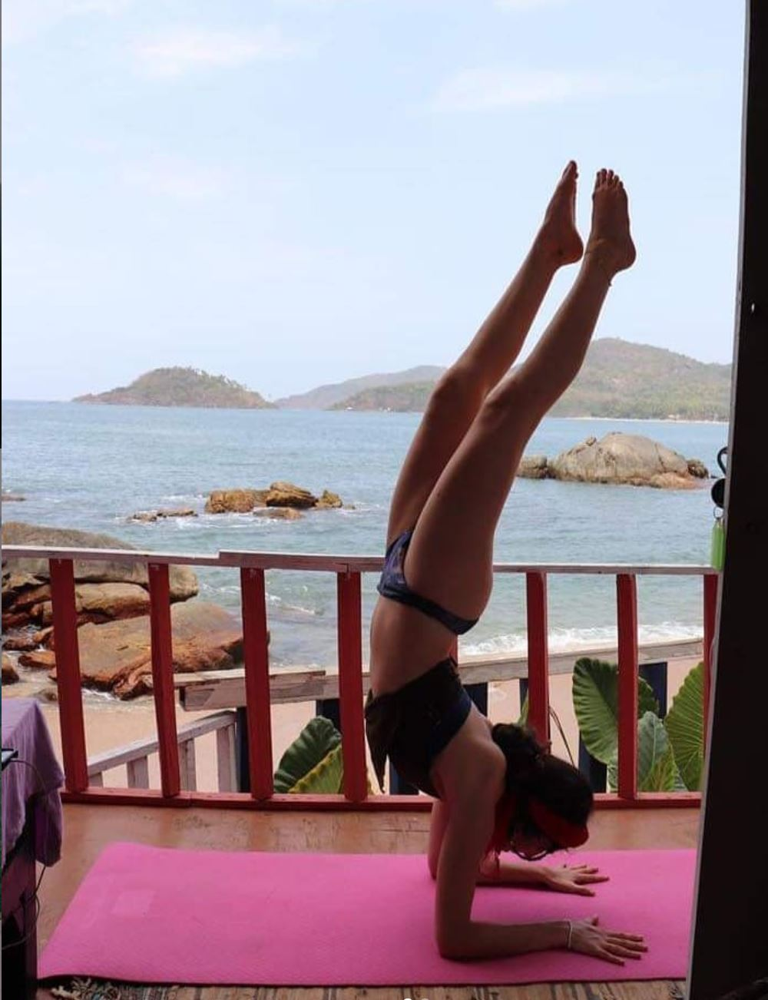
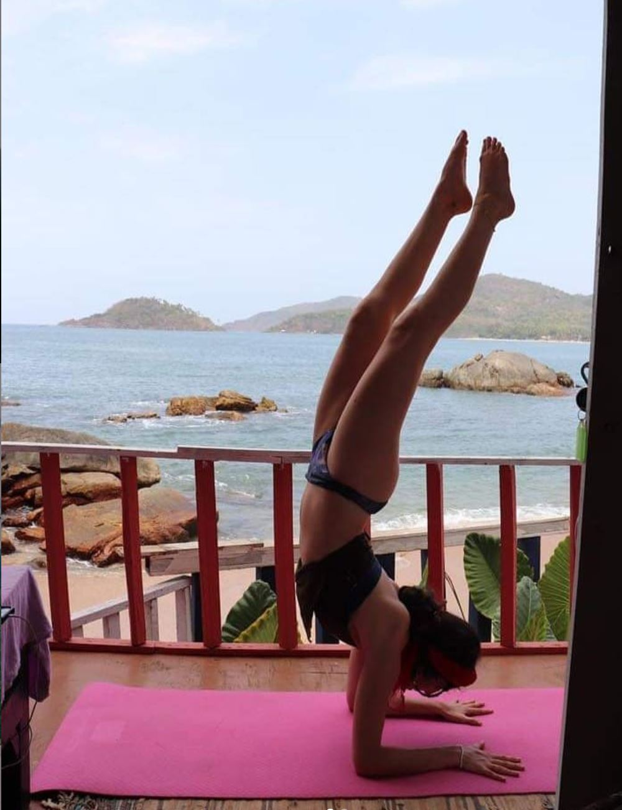

ETHOS
Flow with Bro was founded with the intention to make yoga accessible to all. In modern society, we are fed an ideal of what it means to be a Yogi; believing that we must look a certain way or be able to achieve a certain asana to practice yoga. When in reality, it is simply presence. To be conscious with our existence both on and off the mat.
ॐ
As a both a student and teacher of yoga, Bronagh has experienced its healing force firsthand. This catalysed Bronagh path as a teacher, leading her to create an open space to guide each student on their own journey towards the Atma. To help overcome societal conditioning to make room for personal growth.
ॐ
Flow with Bro weaves this intent into each and every class creatively. Mixing traditional aspects of yoga such as chanting, pranayama and meditation, with more creative elements such as sound, flow and free movement. To take each and every student, no matter their history, on a healing journey.
ॐ
 
